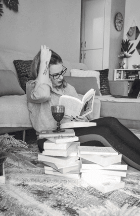

Βιογραφικό Σημείωμα
H Μαρία Μπουρμά γεννήθηκε το 1986 και κατοικεί στην Ορεστιάδα Έβρου. Έχει σπουδάσει Βουλγαρική Γλώσσα, Φιλολογία και Πολιτισμό και είναι κάτοχος των μεταπτυχιακών τίτλων «Σπουδές στον Παρευξείνιο Χώρο» και «Δημιουργική Γραφή». Εργάζεται ως καθηγήτρια βουλγαρικής γλώσσας και συντονίστρια ομάδων γραφής και ανάγνωσης. Ασχολείται με τη μετάφραση βουλγαρικής ποίησης. Είναι υπεύθυνη του τμήματος ποιητικής και μετάφρασης του Φιλολογικού Ομίλου Θεσσαλονίκης. Ποιήματα και μεταφράσεις της έχουν δημοσιευθεί στον Τύπο. Η ποιητική συλλογή Νησί που ψάχνει χάρτη είναι το πρώτο της βιβλίο (Ιωλκός, 2022). Read More
Card Title 2
Card text... Read More


Card Title 3
Card text... Read More